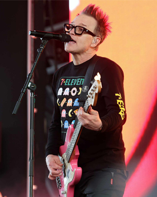

Mark Hoppus

Mark Hoppus, né le 15 mars 1972 à Ridgecrest en Californie, est un musicien et chanteur américain. Il est le cofondateur ainsi que le bassiste
et chanteur des groupes de pop punk californiens Blink-182 et +44, mais aussi Simple Creatures. Mark Hoppus est aussi producteur, il a produit
entre autres les groupes New Found Glory et Motion City Soundtrack.
Carrière musicale
Mark Hoppus, né le 15 mars 1972 à Ridgecrest en Californie, est un musicien et chanteur américain. Il est le cofondateur ainsi que le bassiste
et chanteur des groupes de pop punk californiens Blink-182 et +44, mais aussi Simple Creatures. Mark Hoppus est aussi producteur, il a produit
entre autres les groupes New Found Glory et Motion City Soundtrack.